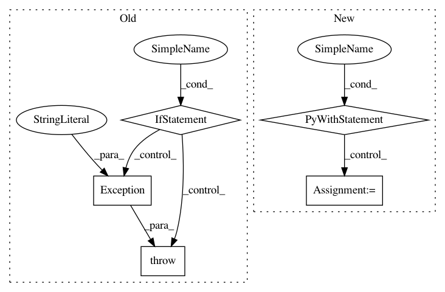

1d532d1cb8b829bdf7055a22c206032ca0b72e46,python/ray/tests/test_webui.py,,test_get_webui,#Any#,13
Before Change
"/api/node_info").json()
break
except requests.exceptions.ConnectionError:
if time.time() > start_time + 30:
raise Exception(
"Timed out while waiting for dashboard to start.")
assert node_info["error"] is None
assert node_info["result"] is not None
assert isinstance(node_info["timestamp"], float)
After Change
"{}/logs/dashboard.out".format(
addresses["session_dir"]), "r") as f:
out_log = f.read()
with open(
"{}/logs/dashboard.err".format(
addresses["session_dir"]), "r") as f:
error_log = f.read()
raise Exception(
"Timed out while waiting for dashboard to start. "
"Dashboard output log: {}\n"
"Dashboard error log: {}\n".format(out_log, error_log))
In pattern: SUPERPATTERN
Frequency: 3
Non-data size: 5
Instances
Project Name: ray-project/ray
Commit Name: 1d532d1cb8b829bdf7055a22c206032ca0b72e46
Time: 2020-04-02
Author: rkooo567@gmail.com
File Name: python/ray/tests/test_webui.py
Class Name:
Method Name: test_get_webui
Project Name: IBM/adversarial-robustness-toolbox
Commit Name: f10c60eb403c8256c7bdde1a8b3df3a33e070070
Time: 2020-04-11
Author: beat.buesser@ie.ibm.com
File Name: tests/attacks/utils.py
Class Name:
Method Name: backend_test_classifier_type_check_fail
Project Name: tensorlayer/tensorlayer
Commit Name: b2e6cccd53bd6c076c32421b8c4d562a96437524
Time: 2018-03-10
Author: dhsig552@163.com
File Name: tensorlayer/layers/normalization.py
Class Name: LayerNormLayer
Method Name: __init__